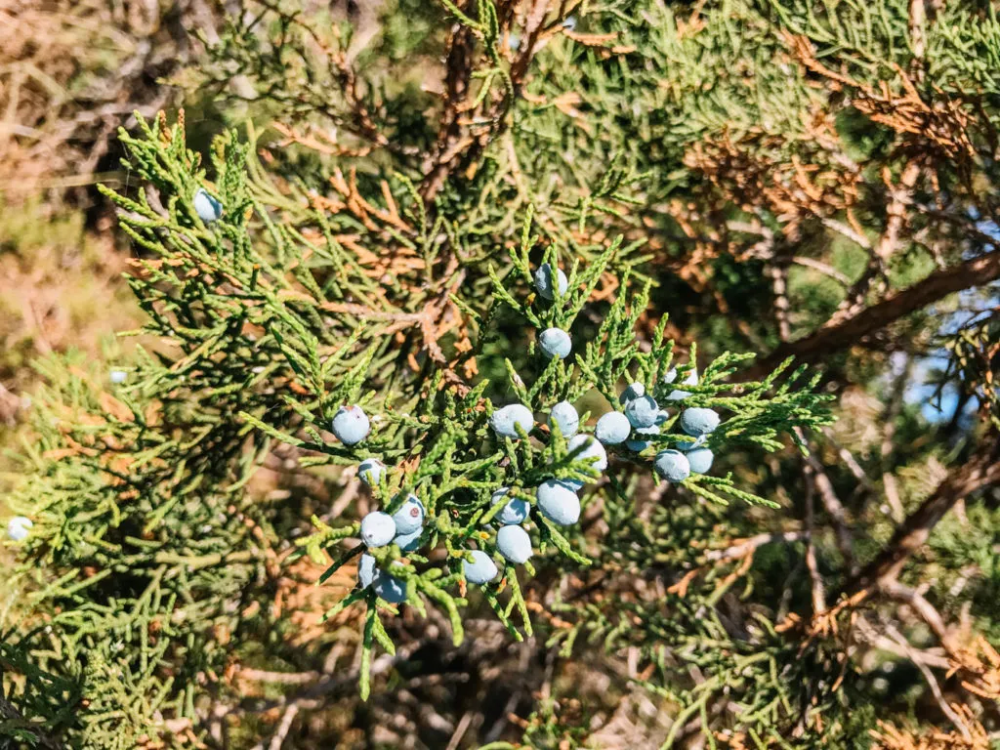
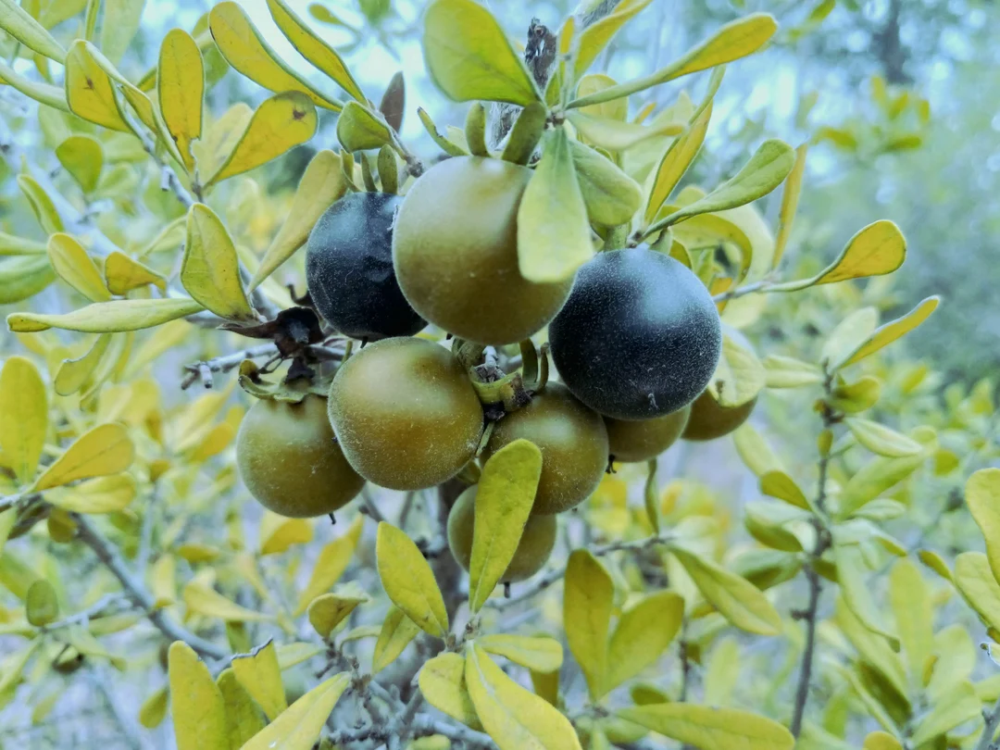
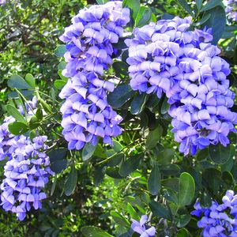
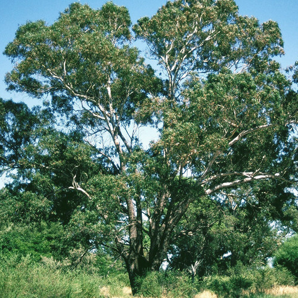
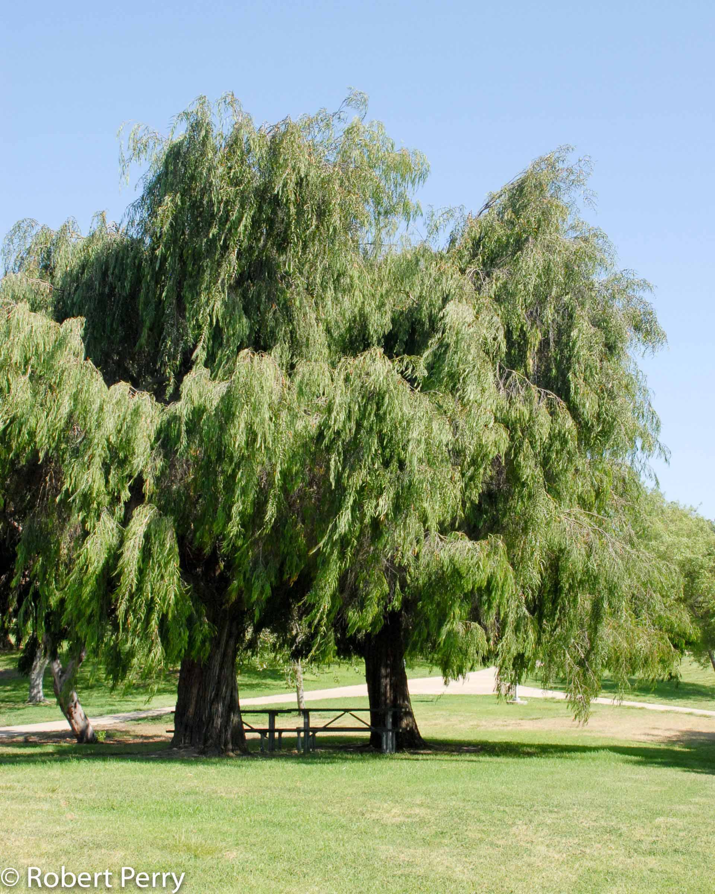
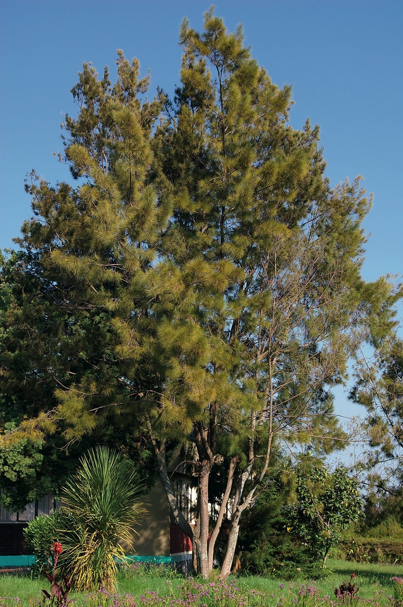
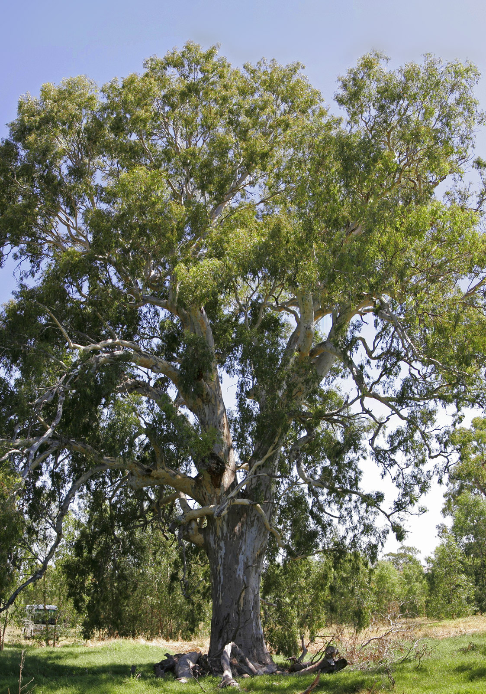

Now: Cfa
Cfa - humid subtropical: hot, humid summers / cool to mild winters - no permanent snow cover. Can be monsoon-influenced or have uniform / varying rainfall.
2100: Cfa
Cfa - humid subtropical: hot, humid summers / cool to mild winters - no permanent snow cover. Can be monsoon-influenced or have uniform / varying rainfall.
1,304,379 people living here.
Average SUHI daytime: 2.51
Average SUHI nighttime: 0.68
Similar to: San Antonio
Suggested Urban Plants

Juniperus ashei

Diospyros texana

Dermatophyllum secundiflorum

Jacaranda mimosifolia

Eucalyptus rudis

Agonis flexuosa

Melaleuca quinquenervia
Phoenix canariensis

Casuarina cunninghamiana

Eucalyptus camaldulensis